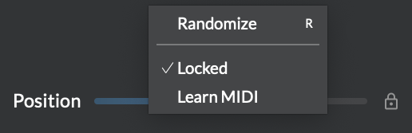

Snapshots and randomizer
Easily store and recall the state of a whole processor in one click with snapshots. Leave creative decisions to chance and get inspired by surprise with the randomizer. All of this instantaneously, or continuously transitioning over time with morphing. Shifting shapes, unpredictable destinations... Atelier is about the journey as much as the result.
Snapshots
Each processor features a bank of eight snapshots at the bottom of its interface:

To capture a snapshot, ⌘-click on one of the eight snapshot buttons; it lights up, indicating that it contains a custom snapshot. Snapshots are saved with your patches. Each instance of a module has independent custom snapshots.
Note
Snapshots include all sliders, buttons and cursors position, and certain other data like the file loaded in Play, or the widget sizes in Viz.
To recall a snapshot click on its button. The processor's parameters start morphing from their current state to the state stored in the snapshot. A white outline around a button indicates the currently-selected snapshot; when any parameter is manually moved, the outline becomes grey, as a reminder of the last selected snapshot.
The currently-selected snapshot (from 1 to 8) is itself a parameter, and therefore modulatable and mappable: just draw a cable to the snapshots area. A little dot in the corner indicates its actual value; it blinks while in transition. This way you can control or randomize the invocation of pre-saved scenes.
Randomizer
Randomization is a way to find new ideas, or just sprinkle a bit of surprise on top of your patch. When randomized, a parameter start morphing from its current value to a new random value. You can randomize:
- A single parameter by right-clicking or pressing
Rwhile hovering it, - A group of parameters by selecting several cursors, and pressing
Rwhile hovering over one of their sliders in the panel below, - A whole processor by clicking Randomize (dice icon) next to the snapshot buttons
- A whole patch by clicking Randomize (dice icon) in the sidebar
Contrarily to snapshots, randomization won't add or remove cursors; add the desired cursors before randomizing.
Tip
The processor-level Randomize button is itself modulatable and mappable. The patch-level Randomize button is only mappable.
The Random amount slider in the sidebar controls how subtle or dramatic the randomization will be. The lower the amount, the closer the new random value will remain from the current one. 100% makes the new value completely random.
Warning
Because randomization affects parameters like gain and feedback, patches may suddenly produce very loud sounds. Work with low headphone levels when using this feature!
Locking

You can exclude certain parameters from randomization or snapshot recall using locking. Right-click on a control or on a module's title bar and select Lock. Locked parameters are:
- not randomized,
- not recalled when recalling a snapshot,
- not saved when saving a snapshot.
By locking some parameters and saving a snapshot, you therefore save a "partial" snapshot that will leave some parameters as-is when recalled (even if they are unlocked afterwards).
Morphing
Both snapshot recall and randomization smoothly morph from the current state to the new one, by interpolating each parameter separately. The Morph time slider in the sidebar sets this transition time.
If you modify any affected parameters during morphing, it stops morphing. The morphing duration is determined by the value of Morph time at the moment you initiate it. You could for example set Morph time to one minute, trigger a recall, then set Morph time to a much shorter value to randomize a few other parameters.
Elastic drag

To ease smooth movements, sliders and cursors also support elastic drag. Hold down ⌘ while dragging the control to smoothly move it to the desired position. You can control the elasticity of the drag operation using the Morph time slider.